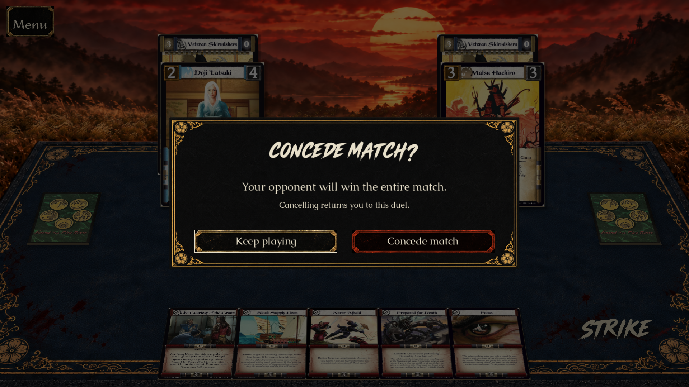
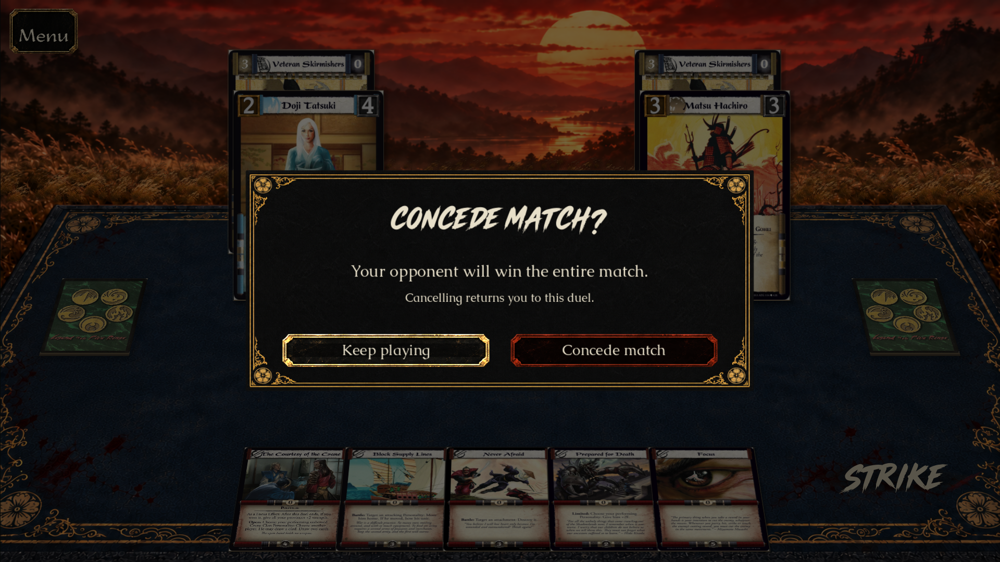
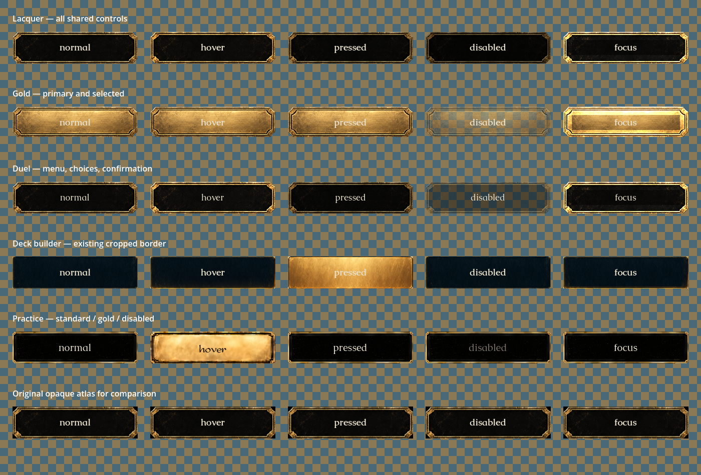
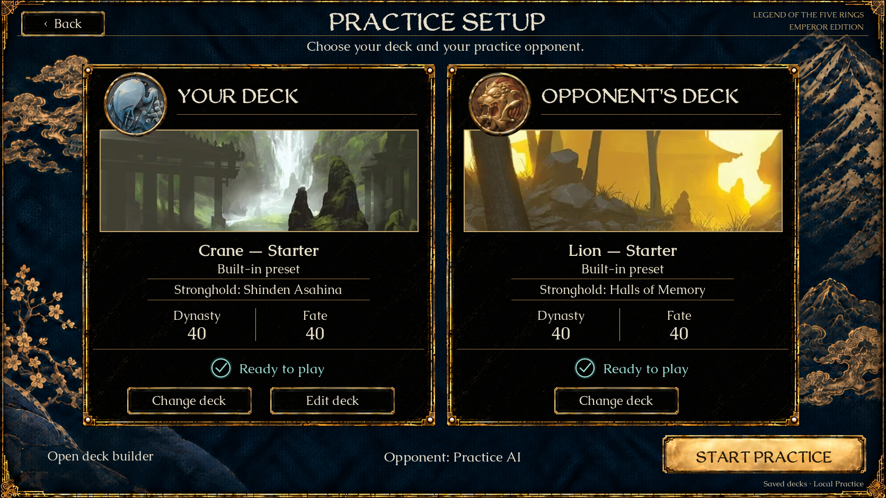
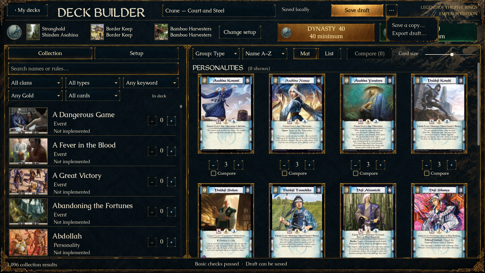
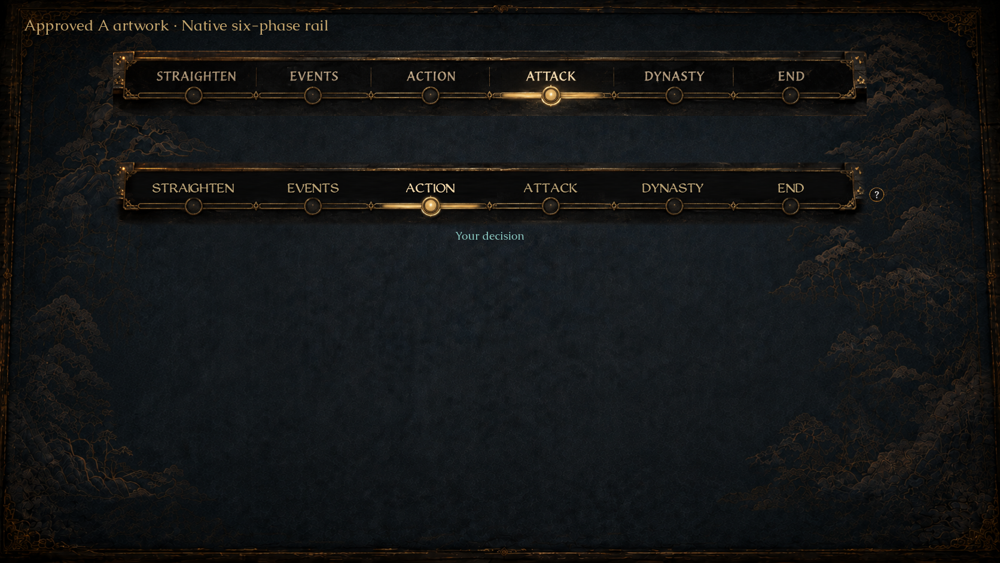
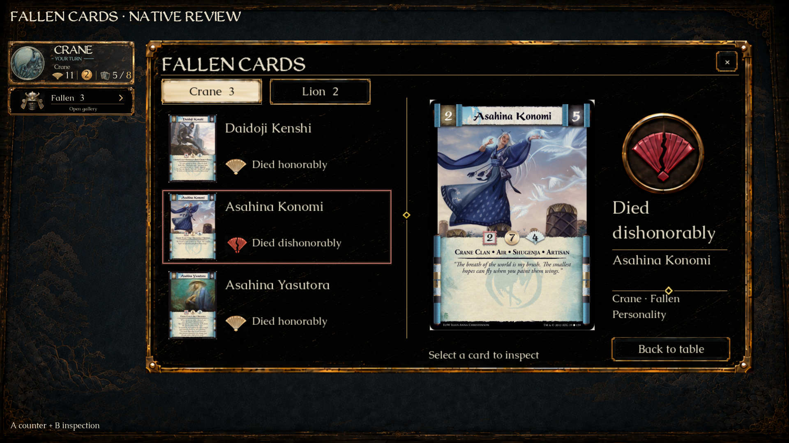

The gold frame and dark lacquer are preserved. The scene now shows through outside the shaped border, including keyboard focus. These are actual Godot captures.


The bottom row is the former shared crop. The other rows use current native style textures; the deck-builder material is unchanged.




